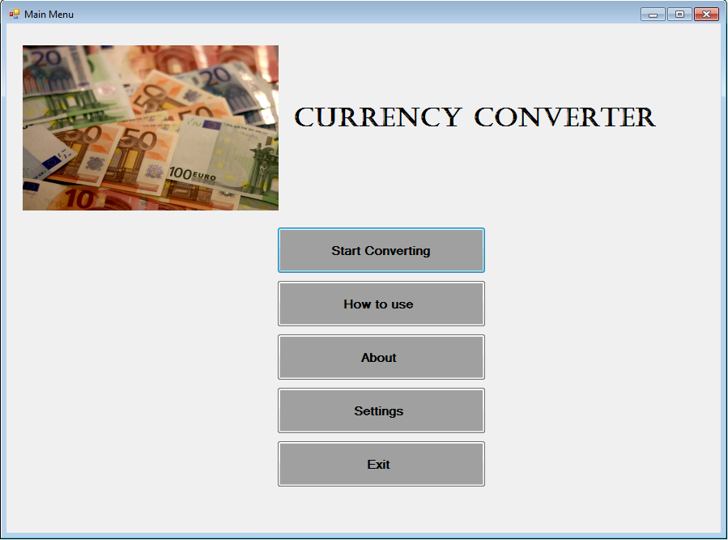
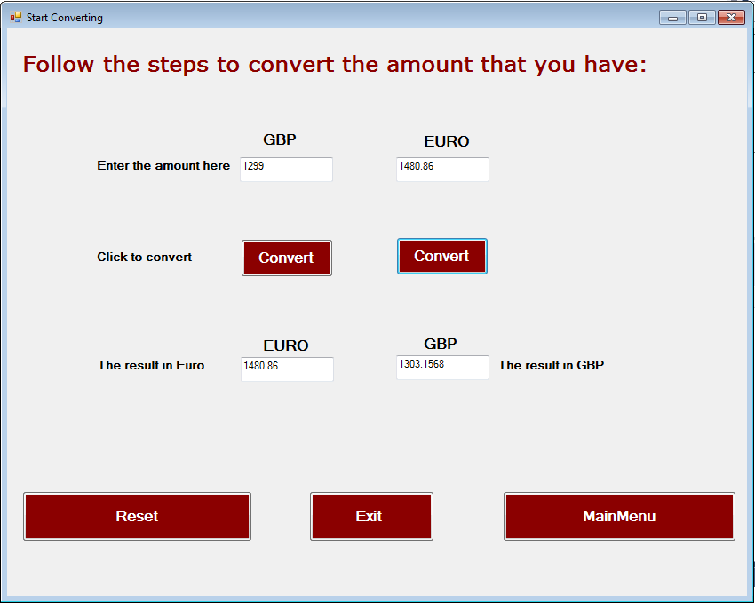

In this unit, you will learn the rules of a programming language and how to write code to develop a successful program. You will be able to apply some of your findings to your own software solutions. In addition, you will learn what factors affect the quality of the program and how to produce good quality programs. You will design and develop your own software program to fulfil a brief. You will test your programs for functionality and purpose, and identify and repair faults. You will review your finished program, having obtained feedback from others, and evaluate possible improvements. This unit is not platform dependent and a range of program-development environments can be used. In particular this unit develops skills from Unit 2: Technology Systems and it
For this unit I developed a simple currency converter to convert fron GBP to Euro or from Euro to GBP by Visual Basic programming language